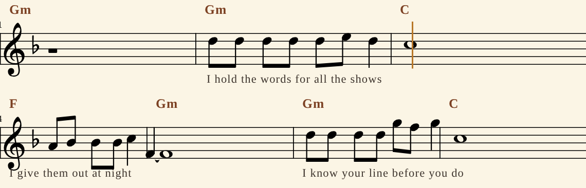

Solo library
Cue · Solo
Line?
Line?
Cue · G dorian · 96 bpm
Bars 1–7 • Follow score
Full MIDI score
Cue · 17 bars▶ 00:06 / 00:43Launchkey Mini MK3
Cue volume 78% · Encoder 1Pitch
Mod
ShiftTransposeOct +Oct −
SessionDrumCustomDeviceVolumePanSendsCustom
›Stop
Solo
Mute
Solo
Mute
ArpFixed chord▶● REC
Arp mode Up · Down · Up/Down · Played · Random · Chord · MutateRate ¼ · ⅛ · 1/16 · 1/32 · TripletOctave 1 · 2 · 3 · 4Rhythm ● · ●×● · ●××● · Random · DeviateLatch On / Off